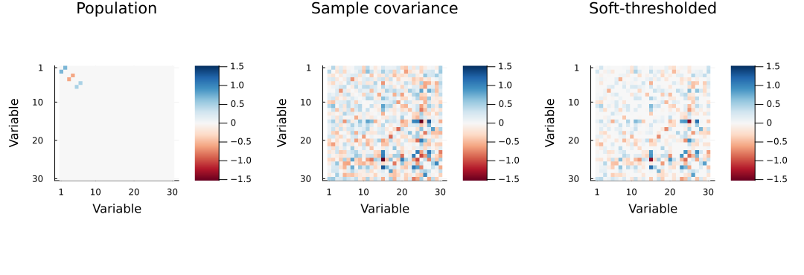

Sparse covariance thresholding
With many variables and few observations, a sample covariance contains many noisy off-diagonal entries. If most population covariances are zero, shrinking small entries to zero can simplify that estimate. This example illustrates both the entrywise calculation and a crucial limitation: the resulting symmetric matrix can have a negative eigenvalue.

Covariance thresholding (Rothman, Levina and Zhu, 2009, doi:10.1198/jasa.2009.0101) estimates a covariance matrix by soft-thresholding the off-diagonal entries of the sample covariance matrix S, which can set some of them exactly to zero. For a symmetric matrix Σ, the estimate minimizes
\[\min_{\Sigma=\Sigma^\top}\;\frac12\|\Sigma-S\|_F^2+\lambda\sum_{i\ne j}|\Sigma_{ij}|,\]
and the diagonal is left out of the penalty.
This is covariance thresholding, not the graphical lasso, which estimates a sparse inverse covariance matrix from a log-determinant objective. The zeros here are zeros of the covariance estimate.
The problem has a closed-form solution, so this page uses no iterative solver: the solvers of ProximalSolvers are not used, and the computation is ProximalBase's proximal operator prox of NormL1, which soft-thresholds a vector. The estimate is then stored in ProximalBase's SymmetricSparseIterate, the storage type for a symmetric matrix. The estimate is not guaranteed to be positive semidefinite, and no projection onto the positive semidefinite matrices is applied; the last section shows an estimate with a negative eigenvalue.
using LinearAlgebra, Random, ProximalBaseData
The data are drawn from a seeded generator: n = 10 observations of p = 30 variables, whose population covariance is the identity except for three correlated pairs. The columns are centered and S = XᵀX/(n − 1). With n − 1 = 9 below p, the sample covariance matrix has rank at most 9 and is singular.
rng = Xoshiro(2026)
n, p = 10, 30
Sigma_true = Matrix{Float64}(I, p, p)
for (i, j, correlation) in ((1, 2, 0.7), (3, 4, -0.6), (5, 6, 0.5))
Sigma_true[i, j] = correlation
Sigma_true[j, i] = correlation
end
X = randn(rng, n, p) * cholesky(Symmetric(Sigma_true)).U
X .-= sum(X; dims = 1) ./ n
S = Matrix(Symmetric((X' * X) / (n - 1)))
@assert rank(S; atol = 1e-10) <= n - 1From the matrix problem to a vector problem
Write Σ = Σᵀ through its diagonal and the vector b = (Σᵢⱼ)ᵢ<ⱼ of its entries above the diagonal, and let s = (Sᵢⱼ)ᵢ<ⱼ. Each off-diagonal entry occurs twice in the Frobenius norm and twice in the penalty,
$\|\Sigma - S\|_F^2 = \sum_i (\Sigma_{ii} - S_{ii})^2 + 2\|b - s\|_2^2$ and $\sum_{i \ne j} |\Sigma_{ij}| = 2\|b\|_1$,
so the objective is
$\tfrac12 \sum_i (\Sigma_{ii} - S_{ii})^2 + 2\Big(\tfrac12\|b - s\|_2^2 + \lambda\|b\|_1\Big)$.
The diagonal appears in the first term alone, which is zero at Σᵢᵢ = Sᵢᵢ, so the diagonal is unpenalized and the estimate keeps it. The factor 2 multiplies both the squared norm and the penalty, so the minimizer in b is that of ‖b − s‖²/2 + λ‖b‖₁ at the same λ.
pairs = [(i, j) for j in 2:p for i in 1:j-1]
s = [S[i, j] for (i, j) in pairs]
m = length(s)
lambda = 0.15
@assert m == p * (p - 1) ÷ 2Soft thresholding with prox
The minimizer of ‖b − s‖²/2 + λ‖b‖₁ is the proximal point of λ‖·‖₁ at s with step 1, bⱼ = sign(sⱼ) max(|sⱼ| − λ, 0). ProximalBase computes it with prox(NormL1(λ), s, 1.0).
b = prox(NormL1(lambda), s, 1.0)435-element Vector{Float64}:
0.2936580060749244
0.0
-0.07199787788354595
0.02605468946650985
0.09368670137496107
-0.020377656911040404
0.0
-0.16350247335169474
0.0
0.0
⋮
-0.2207208817844443
0.05062009021279648
-0.6356444410901135
-0.4374728693853809
0.35681169005776436
0.0
-0.42785496943373735
0.23419203861899127
-0.20873009348847368Checks against the closed form
The closed form is written out here, with sign and max, without calling prox.
expected = sign.(s) .* max.(abs.(s) .- lambda, 0.0)
@assert maximum(abs, b - expected) <= 1e-15
@assert all(abs.(b) .<= abs.(s)) # thresholding shrinks entries toward 0
@assert count(iszero, b) > 0 && count(!iszero, b) > 0Storing the estimate in a SymmetricSparseIterate
A SymmetricSparseIterate(p) holds the p(p + 1)/2 independent entries of a symmetric p × p matrix. It is not an AbstractArray: a write Σ̂[i, j] = v sets the entries (i, j) and (j, i) together. A nonzero write makes the coordinate active, so here, where the diagonal is nonzero and only nonzero thresholded entries are written, nactive counts the diagonal and the nonzero thresholded entries (in general it also counts active coordinates that hold a zero). Its documentation gives O(p²) reserved storage with O(1) access: the type records which coordinates are active and does not reduce the memory in use, so it is a convenient representation here and not a saving.
Sigma_hat = SymmetricSparseIterate(p)
for i in 1:p
Sigma_hat[i, i] = S[i, i] # the diagonal is not penalized
end
for (k, (i, j)) in enumerate(pairs)
iszero(b[k]) || (Sigma_hat[i, j] = b[k])
end
@assert ncoordinates(Sigma_hat) == p * (p + 1) ÷ 2
@assert nactive(Sigma_hat) == p + count(!iszero, b)
@assert nactive(Sigma_hat) < ncoordinates(Sigma_hat)The dense matrix of the estimate is Matrix(Σ̂). It is symmetric, keeps the diagonal of S and agrees with the matrix that is built directly from S and b.
Sigma_dense = Matrix(Sigma_hat)
reconstructed = copy(S)
for (k, (i, j)) in enumerate(pairs)
reconstructed[i, j] = b[k]
reconstructed[j, i] = b[k]
end
@assert issymmetric(Sigma_dense) && diag(Sigma_dense) == diag(S)
@assert Sigma_dense == reconstructed
@assert count(iszero, [Sigma_dense[i, j] for (i, j) in pairs]) == count(iszero, b)Independent objective and stationarity checks
Every off-diagonal entry is counted twice in the symmetric matrix objective, so it equals twice the reduced vector objective. At a nonzero bⱼ, stationarity requires bⱼ - sⱼ + λ sign(bⱼ) = 0; at zero it requires |sⱼ| ≤ λ. These checks use the original sample covariance and the returned entries rather than a proximal diagnostic.
vector_objective = sum(abs2, b - s) / 2 + lambda * sum(abs, b)
matrix_objective = sum(abs2, Sigma_dense - S) / 2 +
lambda * sum(abs(Sigma_dense[i, j]) for i in 1:p for j in 1:p if i != j)
kkt = maximum(iszero(b[j]) ? max(abs(s[j]) - lambda, 0.0) :
abs(b[j] - s[j] + lambda * sign(b[j])) for j in eachindex(b))
@assert isfinite(vector_objective) && isfinite(matrix_objective) && isfinite(kkt)
@assert isapprox(matrix_objective, 2vector_objective; rtol=1e-12, atol=1e-14)
@assert kkt <= 1e-12
println("matrix objective = ", matrix_objective, "; entrywise KKT residual = ", kkt)matrix objective = 27.94405343893411; entrywise KKT residual = 8.326672684688674e-17Reading the figure
The three heatmaps share one color scale. Their diagonals are hidden (displayed as zero) to make the off-diagonal structure visible; the estimator itself preserves the sample diagonal. Thresholding removes weak sample covariances and shrinks surviving ones. With only ten observations the sample is noisy, so many visible entries need not correspond to the three correlated population pairs. Sparsity alone does not ensure a valid covariance.
using Plots
covariance_matrices = [copy(Sigma_true), copy(S), copy(Sigma_dense)]
for matrix in covariance_matrices
matrix[diagind(matrix)] .= 0.0
end
covariance_limit = maximum(maximum(abs, matrix) for matrix in covariance_matrices)
covariance_panels = [heatmap(1:p, 1:p, matrix; title=title, color=:RdBu,
clims=(-covariance_limit, covariance_limit), aspect_ratio=1, yflip=true,
xlabel="Variable", ylabel="Variable", xticks=[1, 10, 20, 30], yticks=[1, 10, 20, 30])
for (title, matrix) in zip(("Population", "Sample covariance", "Soft-thresholded"), covariance_matrices)]
plot(covariance_panels...; layout=(1, 3), size=(1080, 370),
left_margin=4Plots.mm, bottom_margin=5Plots.mm)
savefig("sparse_covariance_soft_thresholding.svg")
nothingThe estimate need not be positive semidefinite
Soft thresholding changes each entry separately, and nothing in it keeps the eigenvalues of the sample covariance matrix nonnegative. S is positive semidefinite and singular here. The thresholded estimate has a negative smallest eigenvalue (about -0.09, printed below), so it is not a covariance matrix. This page does not repair it: a projection onto the positive semidefinite matrices, or an estimator that constrains the eigenvalues, is a different problem.
lambda_min_S = eigmin(Symmetric(S))
lambda_min_hat = eigmin(Symmetric(Sigma_dense))
@assert lambda_min_S > -1e-12
@assert lambda_min_hat < -0.05
println("Distinct off-diagonal entries: ", m, ", nonzero after thresholding: ", count(!iszero, b), " (true nonzero entries: 3)")
println("Active coordinates of the SymmetricSparseIterate: ", nactive(Sigma_hat), " of ", ncoordinates(Sigma_hat))
println("Largest difference from the closed form: ", maximum(abs, b - expected))
println("Frobenius error of the sample covariance: ", norm(S - Sigma_true))
println("Frobenius error of the thresholded estimate: ", norm(Sigma_dense - Sigma_true))
println("Smallest eigenvalue of S: ", lambda_min_S, ", of the estimate: ", lambda_min_hat)Distinct off-diagonal entries: 435, nonzero after thresholding: 286 (true nonzero entries: 3)
Active coordinates of the SymmetricSparseIterate: 316 of 465
Largest difference from the closed form: 0.0
Frobenius error of the sample covariance: 10.944846829555244
Frobenius error of the thresholded estimate: 8.06111439222625
Smallest eigenvalue of S: -2.0174198726086695e-15, of the estimate: -0.08923738986849093Statistical limitations
This simulation has far fewer observations than variables, so its noisy entries are not reliable estimates of individual associations. The fixed threshold is measured in covariance units and is sensitive to variable scales. Covariance zeros describe marginal association, whereas conditional independence in a Gaussian model is read from the inverse covariance. A positive-semidefinite constraint or repair would define a different estimator.
What we learned
Covariance soft thresholding reduces to independent scalar proximal operations on the unique off-diagonal entries. The matrix and vector objectives agree, and their entrywise stationarity conditions can be checked without a solver. Symmetry and sparse entries do not ensure positive semidefiniteness: the eigenvalue check is essential before treating the estimate as a covariance matrix.
The figure is generated from this script during the documentation build. Run the script alone for the same seeded calculations and checks without loading Plots.